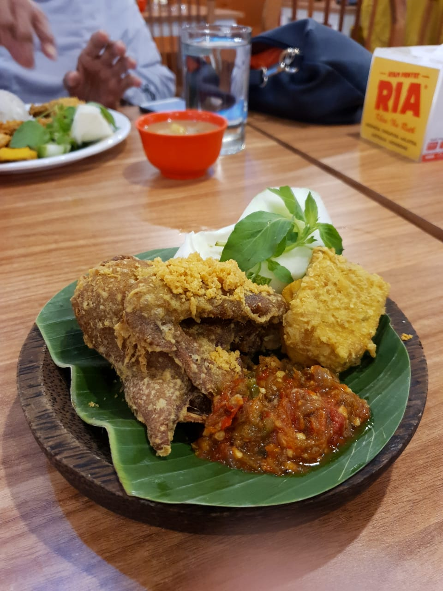

Ayam Penyet

Description
Ayam Penyet is a popular Indonesian dish of fried chicken that is "smashed" or pressed to tenderize it and let it soak up the flavors of a fiery sambal (chili paste). It's typically served with steamed rice, fresh cucumber, and cabbage.
Ingredients
- 4 chicken pieces (thigh or drumstick)
- 2 garlic cloves, crushed
- 1 tsp turmeric powder
- 1 tsp coriander powder
- Salt to taste
- Cooking oil for deep frying
For the sambal
- 8 bird's eye chilies
- 3 red chilies
- 3 shallots
- 2 garlic cloves
- 2 tomatoes
- 1 tsp sugar
- Salt to taste
Steps
- Marinate chicken with crushed garlic, turmeric, coriander powder, and salt for at least 30 minutes.
- Deep fry the marinated chicken until golden brown and cooked through.
- For the sambal, boil or fry the chilies, shallots, garlic, and tomatoes until softened.
- Grind or pound the boiled ingredients together with sugar and salt into a coarse paste.
- Place the fried chicken on a mortar or plate and gently smash it, then top generously with sambal.
- Serve with steamed rice, sliced cucumber, and cabbage.
Home